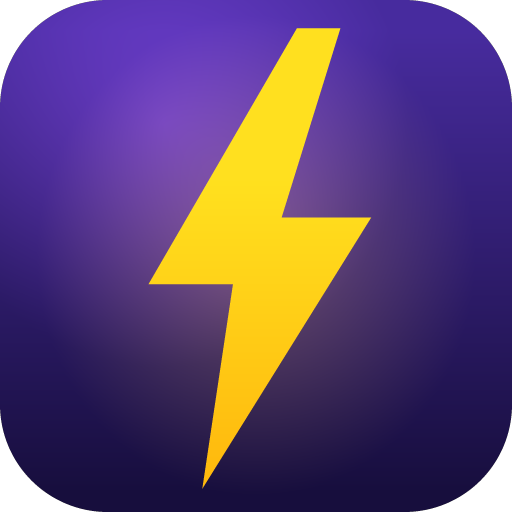
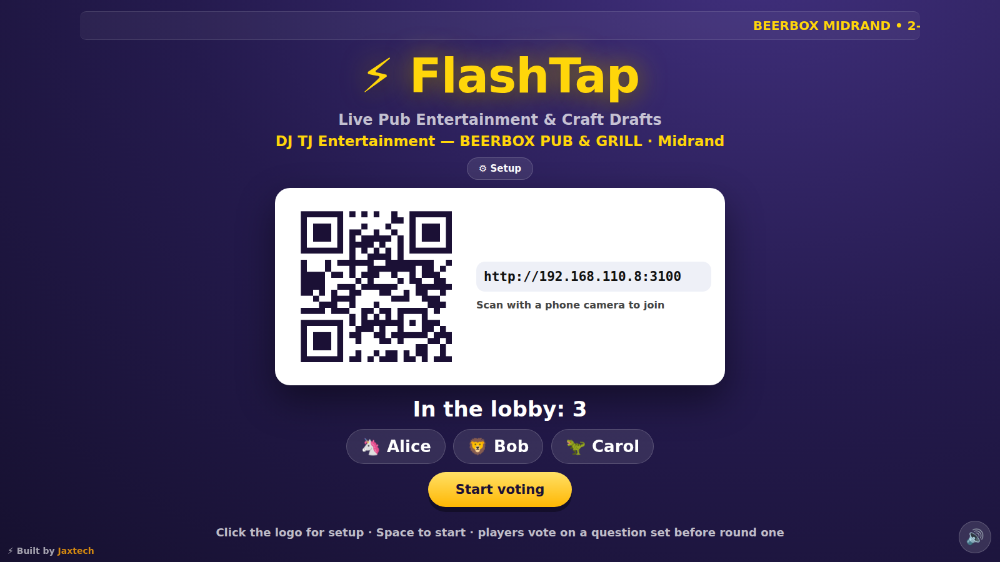
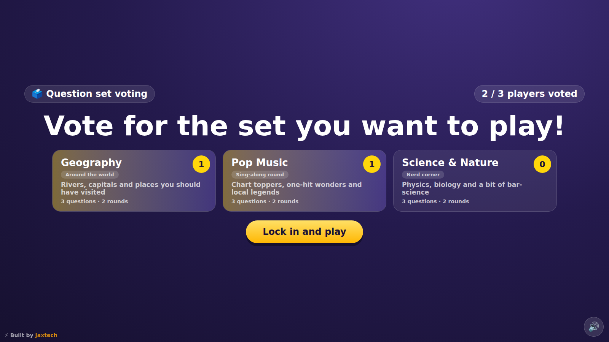
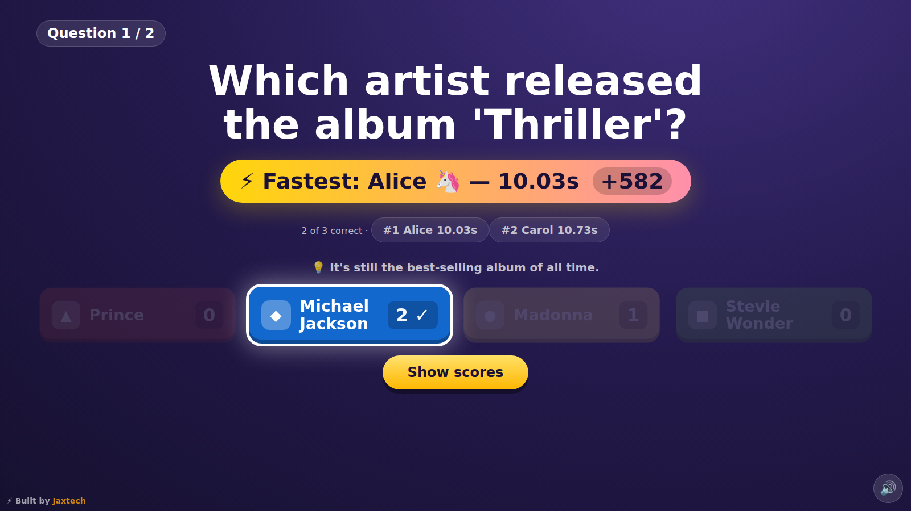
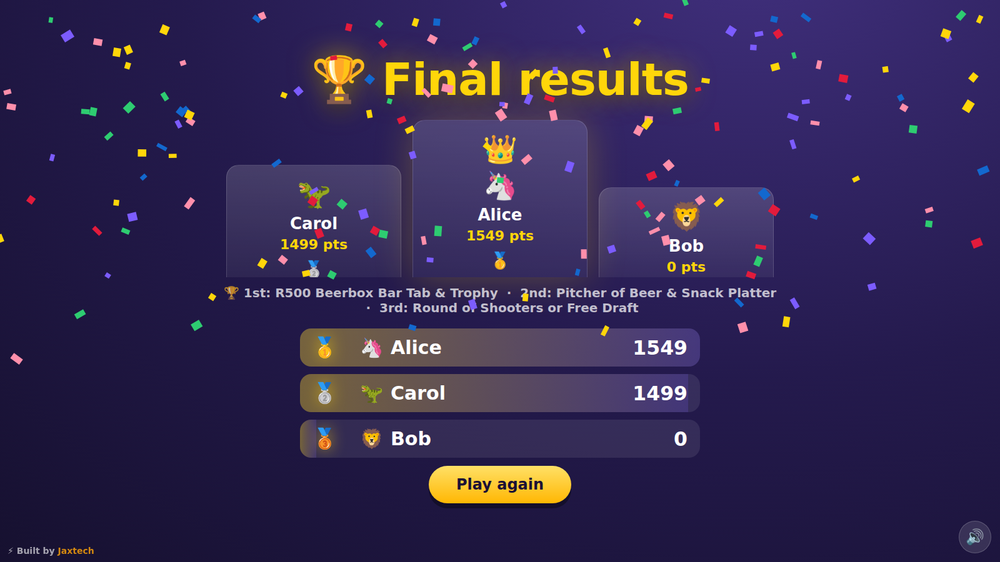
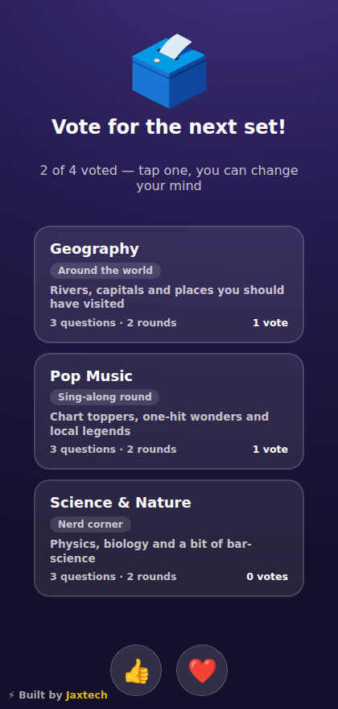
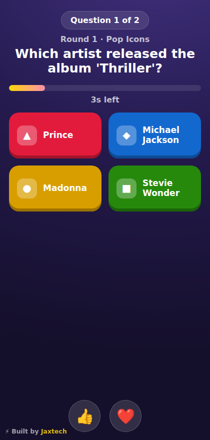

⚡ FlashTap
The phone-party quiz for DJs, venues and event nights — fastest tap wins.
License-keyed: installs ask for a FlashTap key (FT-XXXXX-XXXXX-XXXXX) and verify online. Get a key from the issuer.
1 · Host sets up
Click the FlashTap logo on the big screen: DJ/company name, venue, branch and tonight's prizes.
2 · Players scan
Phones scan the QR on the big screen and type their name. 2–100 players, one LAN, no accounts.
3 · Everyone votes
Players vote the question set up (Pop? Science? World?). Most votes wins — host locks it in.
4 · Fastest finger wins
Tap the right answer quickest for up to 1000 points. 👍 ❤️ reactions fly across the big screen.
What it looks like






Run it yourself
git clone https://github.com/Nageljakes/flashtap.git cd flashtap npm install npm start # players: http://<lan-ip>:3000 · host: /host
Windows PCs: grab the installer from Releases — enter your license key during setup, then it starts the server and opens the host window automatically (F11 for fullscreen).